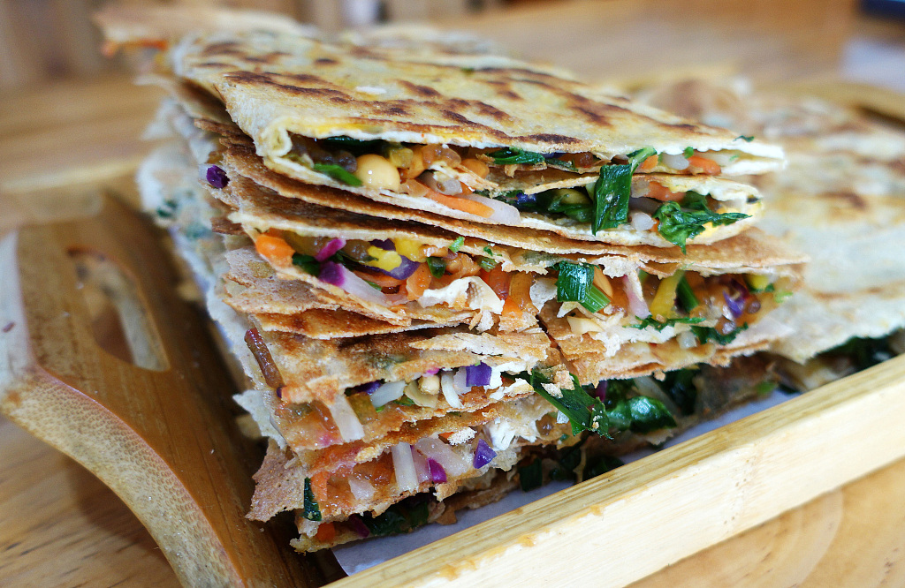

Taste of Tai'an
Local Flavors — Stuffed Flatbreads
At the foot of Mount Tai, breakfast and street snacks often mean one thing: thin batter kissed by the griddle until golden and crisp, then folded around a rainbow of chopped greens, carrot, cabbage, and whatever the cook has on hand—hearty, portable, and unmistakably Shandong.
From the griddle
Crisp outside, garden inside
The dish in our lead photo is a classic pattern: layers of savory pancake, cut into neat blocks so you can see the filling—proof of skill in both the sear and the chop. It is the kind of food you eat standing near a stall or at a low table, fingers warmed by the tray.

Tai'an’s pancake culture sits between home cooking and street theatre. Vendors work fast: spread batter, crack an egg if you ask, scatter scallions and pickles, fold, and press until the outside crackles. The version stacked here leans vegetarian-bright— lots of hand-cut vegetables—while meat-and-egg variations are just as common around morning markets and lanes near the old city.
“First bite is sound—the crunch—then heat and oil, then the cool crunch of cabbage and carrot. You taste the mountain morning even in the city.”
Where to try — Morning stalls and breakfast streets near residential neighborhoods often open before dawn; follow steam and the rhythm of the scraper on iron. Pair with soy milk or millet porridge, then walk toward Dai Temple or the mountain buses with a full stomach.